O catálogo definitivo com todas as formas de animes, mangás, fillers e filmes da história do Príncipe.
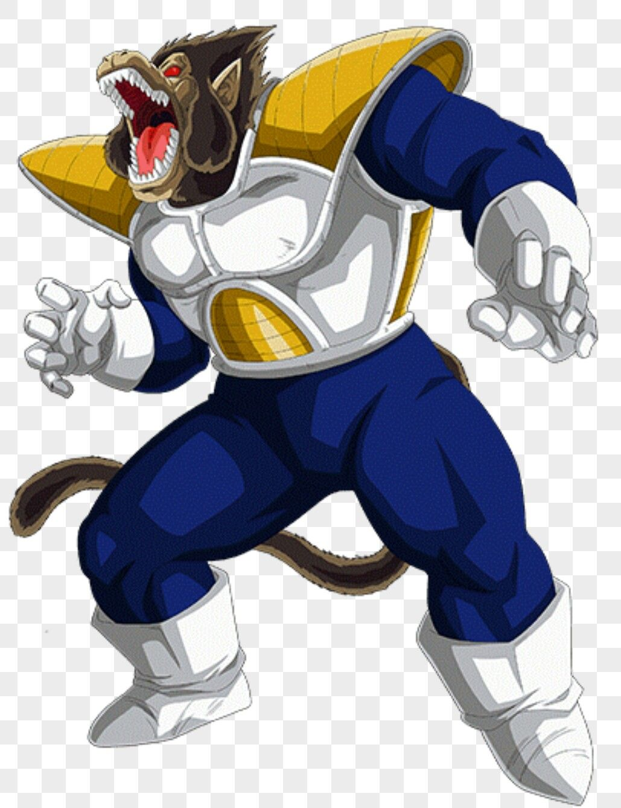
ANIME E MANGÁ CANÔNICO
Utilizada em sua primeira invasão à Terra em Dragon Ball Z. Ao absorver os raios Blutz da Lua, Vegeta multiplica seu poder por dez. Diferente dos guerreiros inferiores, o sangue real permite que ele mantenha sua consciência, fala e raciocínio estratégico intactos durante a transformação.
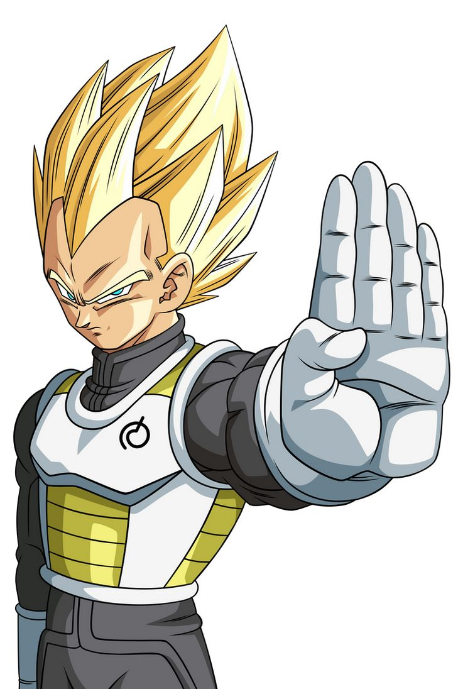
ANIME E MANGÁ CANÔNICO
Despertado no espaço através da fúria pura gerada pela frustração de não conseguir alcançar Goku. Vegeta rompe seus limites psicológicos e estreia a lendária forma de cabelos dourados contra o Android 19, apresentando ao mundo seu icônico ataque Big Bang Attack.
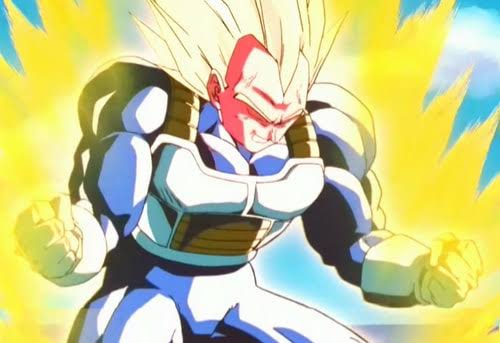
ANIME E MANGÁ CANÔNICO
Resultado do treinamento intenso na Sala do Tempo com Trunks. Essa variação força o bombeamento de energia pelos músculos, expandindo o poder físico e a musculatura sem perder velocidade. Foi a forma usada para humilhar Cell em sua segunda forma e disparar o Final Flash original.
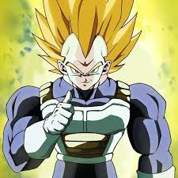
ANIME E MANGÁ CANÔNICO
Vegeta descobriu essa variação hipertrofiada na Sala do Tempo, que eleva o poder bruto ao extremo, mas sacrifica a velocidade e reflexos devido ao peso excessivo dos músculos inflados. Por sua inteligência tática, ele descartou o uso em combate real, prevendo o erro que Trunks cometeu contra Cell Perfeito.
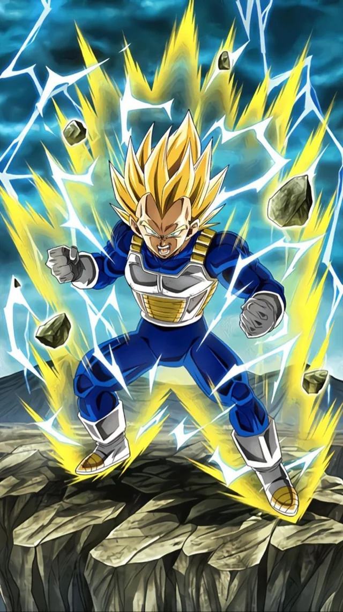
ANIME E MANGÁ CANÔNICO
Alcançado originalmente através de um treinamento solo severo na Corporação Cápsula durante os 7 anos de paz após a Saga Cell. Posteriormente, Vegeta teve todo o potencial latente dessa transformação liberado ao aceitar a marca Majin de Babidi, alcançando o ápice do seu poder para enfrentar Goku de igual para igual e desferir o lendário sacrifício contra Majin Boo.
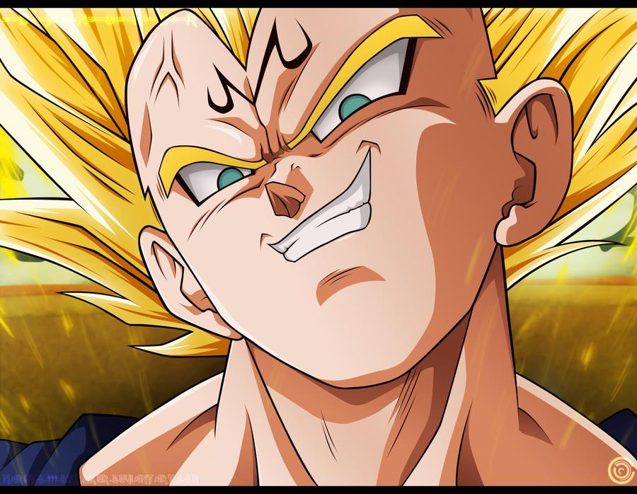
ANIME E MANGÁ CANÔNICO / SAGA BUU
O estado assumido quando ele permite que o mago Babidi o corrompa para remover sua empatia humana e forçar uma luta contra Goku. A marca 'M' na testa sela um bônus massivo de power que eleva seu SSJ2 ao limite máximo absoluto, liberando toda a sua agressividade reprimida.
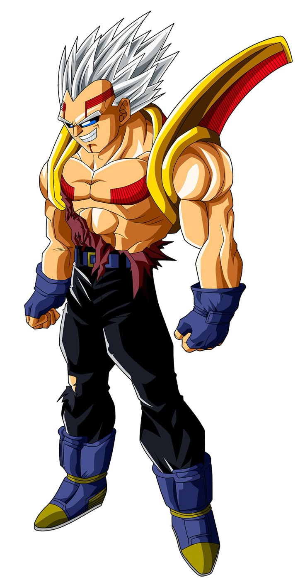
ANIME SPIN-OFF / DRAGON BALL GT
Ocorre quando o parasita alienígena Tsufurujin, Baby, infecta Vegeta e evolui absorvendo energia negativa. O rosto de Vegeta ganha placas escuras, as sobrancelhas somem e ele desenvolve ombreiras e asas biológicas pretas, gerando a poderosa técnica destrutiva Revenge Death Ball.
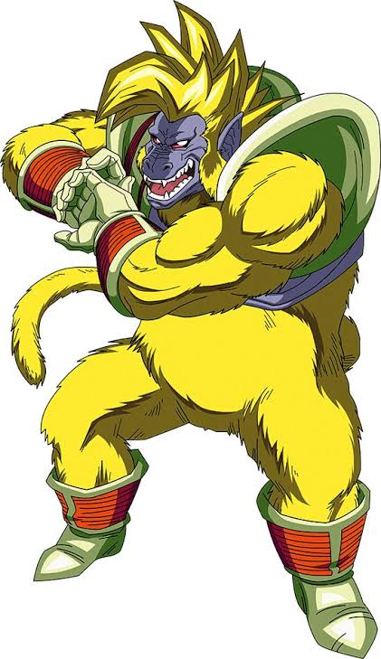
ANIME SPIN-OFF / DRAGON BALL GT
Forçado através do gerador de ondas Blutz criado por Bulma infectada. O corpo de Vegeta se transforma em um macaco gigante de pelos dourados metálicos, mas totalmente sob o comando de Baby, criando um monstro colossal com poder de destruição planetária.
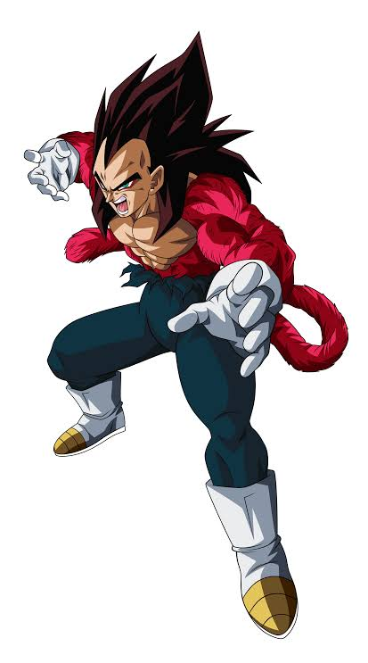
ANIME SPIN-OFF / DRAGON BALL GT
Ao dominar totalmente a selvageria do Macaco Dourado, o corpo se condensa de volta à forma humana. Vegeta assume essa transformação lendária de pelagem vermelha, cabelos pretos originais compridos e olhos sombreados, igualando seu poder ao de Goku SSJ4 para fazer a fusão de Gogeta.
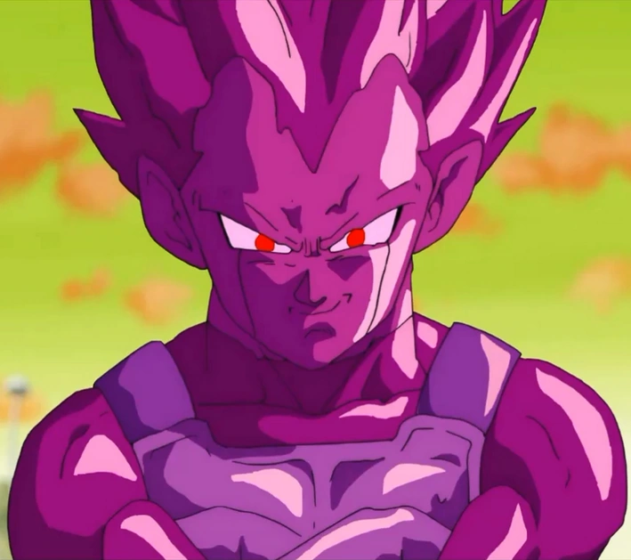
ANIME FILLER / DRAGON BALL SUPER
Surgida no Planeta Potaufeu. A substância mística drena completamente o corpo e as habilidades do Vegeta original, gerando uma cópia idêntica de cor roxa gelatinosa com acesso a todo o poder e transformações divinas do príncipe.
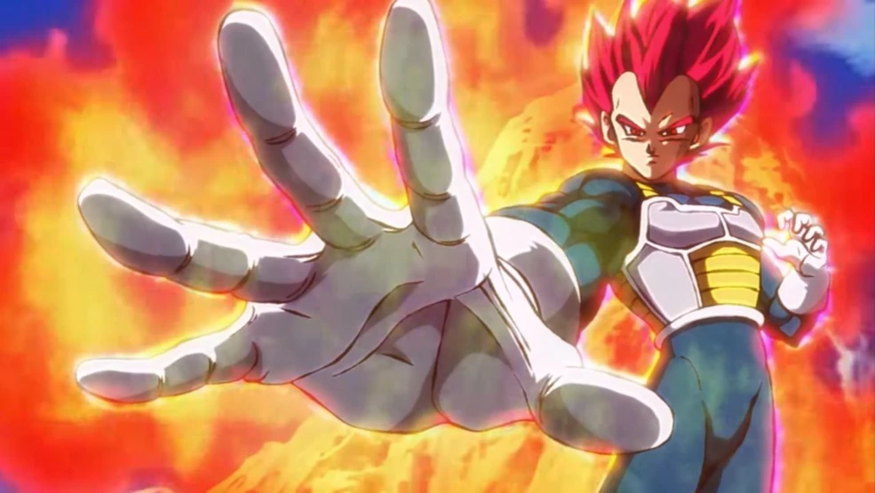
MANGÁ CANÔNICO / FILME BROLY
Diferente de Goku, Vegeta alcançou este estado de cabelos avermelhados puramente através do árduo treinamento mental e físico com Whis, sem depender de rituais. Essa forma concede agilidade extrema, capacidade de ler o Ki divino e excelente regeneração consumindo pouca energia.
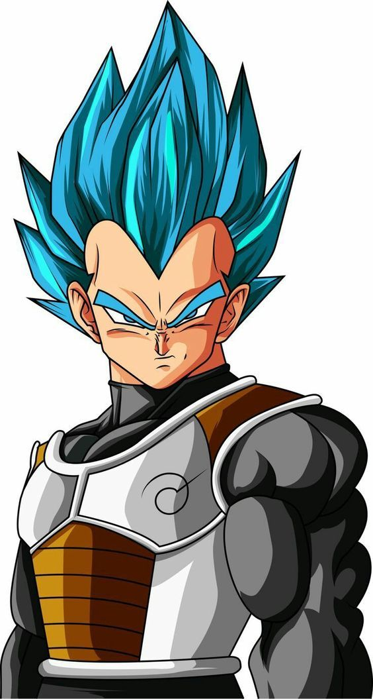
ANIME E MANGÁ CANÔNICO / DBS
Ocorre ao transmutar o poder do Super Saiyajin clássico utilizando a energia estabilizada do Ki Divino. Estreando contra Freeza ressuscitado, esta forma de cabelos azuis foca na retenção máxima de energia dentro do corpo, permitindo aplicar golpes rápidos com força destrutiva esmagadora.
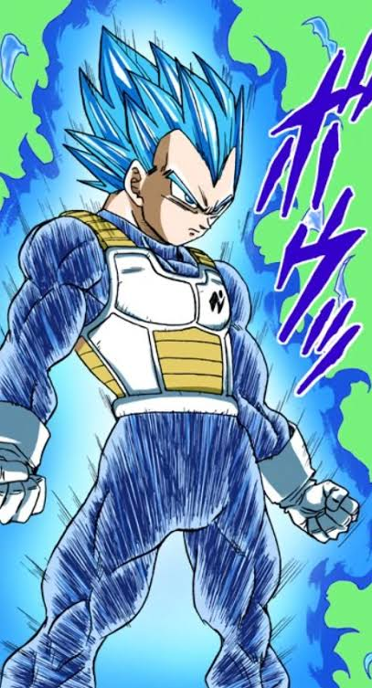
MANGÁ CANÔNICO / SAGA BLACK
Uma técnica mental avançada usada no mangá onde Vegeta tranca 100% da aura transbordante do Blue dentro de seu núcleo. Isso remove o desgaste físico drástico da forma azul e permite lutar em potência máxima contínua, batendo de frente contra a fusão de Goku Black e Zamasu.
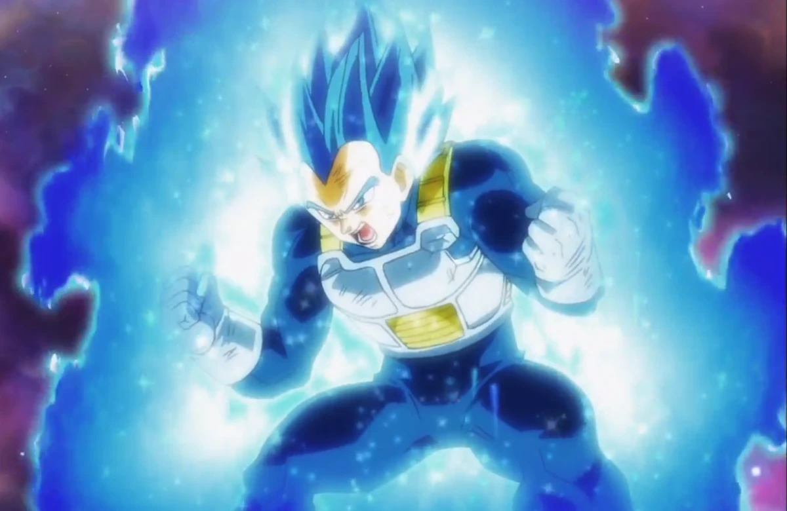
ANIME CANÔNICO / TORNEIO DO PODER
Desperta ao romper os limites do Blue comum focado em proteger o Universo 7 e cumprir sua promessa a Cabba. O tom do cabelo e olhos passa para um azul cobalto brilhante e denso, concedendo poder superior capaz de anular e quebrar a energia da destruição usada por Toppo.
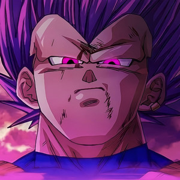
MANGÁ CANÔNICO / SAGA GRANOLAH
A transformação canônica máxima alcançada sob a tutela direta de Bills. Alimentada pela energia Hakai da destruição, seus cabelos ficam roxos e as sobrancelhas somem. Esta técnica converte o dano físico sofrido em determinação pura e poder bruto, deixando Vegeta mais letal a cada golpe recebido.